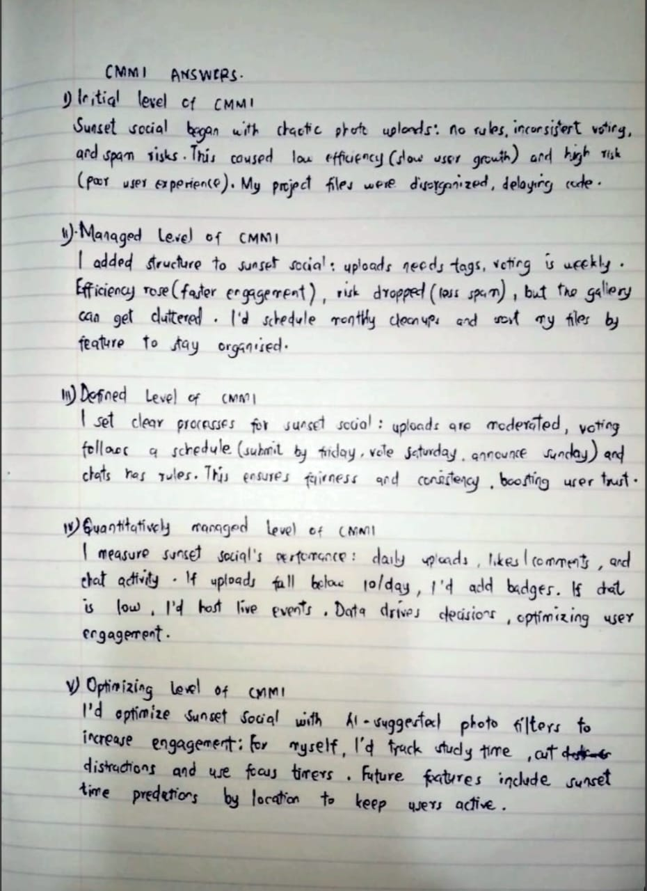

I added 5 new JavaScript commands to my standalone demo page, including an if statement, an if-else, an else if, a while loop, and a do-while loop. The JavaScript section remains alphabetized. Link: demo.html. Also, I’ve included a while loop demo in HW9, linked to the demo page.
Below are my handwritten answers to the CMMI questions, with a picture uploaded:
(Image: Handwritten answers to CMMI questions i-v, photographed with a cellphone and uploaded.)
Website Name: Sunset Social
I worked individually on this project, as allowed by the instructions. Sunset Social is a niche social media platform where users share and discover photos of sunsets from around the world. Users can post sunset photos, tag locations, add captions, and vote on their favorites in a weekly “Sunset Spotlight” contest. The site fosters a global community of sunset enthusiasts, encouraging interaction through comments, likes, and a live chat feature during peak sunset hours in various time zones.
My Role: As the sole developer, I handled all aspects—design, frontend (HTML/CSS/JavaScript), backend (mock API for photo uploads), and content creation. The site is new, not based on an existing one, and does not copy others’ work.
On the homepage (sunset-social.html), users see: “Welcome to Sunset Social! Capture the magic of sunsets—share your photos, vote for favorites, and connect with sunset lovers worldwide.”
The site is accessible at: sunset-social.html.
The focus is on user engagement through photo sharing and community interaction. For 9U1 students, this could be adapted to a workplace context (e.g., a company photo-sharing platform), but I chose a public social media concept. The topic is verified as new, not overlapping with existing sites.
One-Person Format: Sunset Social solves the problem of scattered sunset photography communities. Many enthusiasts share on platforms like Instagram, but there’s no dedicated space for sunset lovers to connect, compete, and chat in real-time. This platform centralizes the experience, making it easier to discover stunning sunsets, engage with others, and participate in contests—all in one place. The challenge is building a user-friendly interface that encourages participation while handling photo uploads and live interactions efficiently.
I backed up all project files (HTML, CSS, JavaScript) locally and on a cloud drive (Google Drive) on March 18, 2025. The project is self-contained, so no group backups were needed.
The link to Sunset Social is on my homepage and accessible at: sunset-social.html.